传世佳作数字展厅
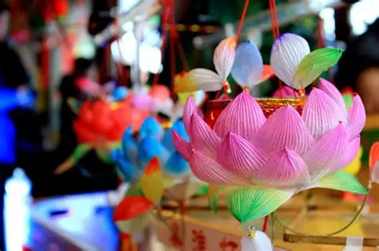
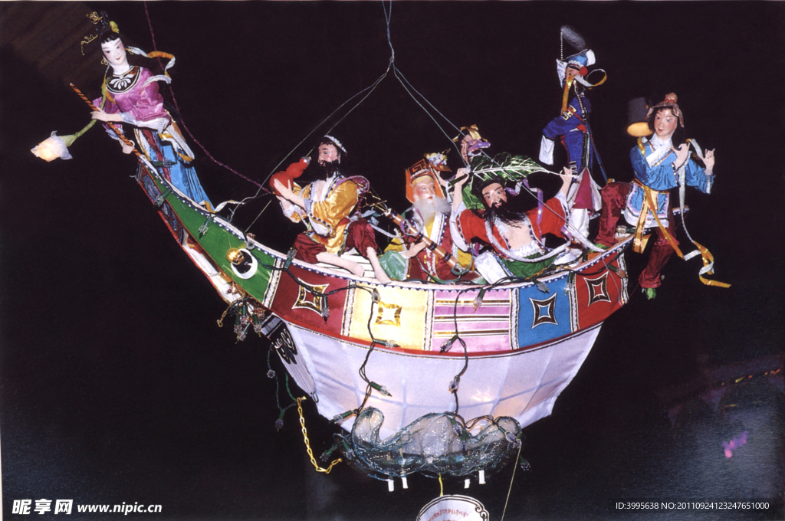
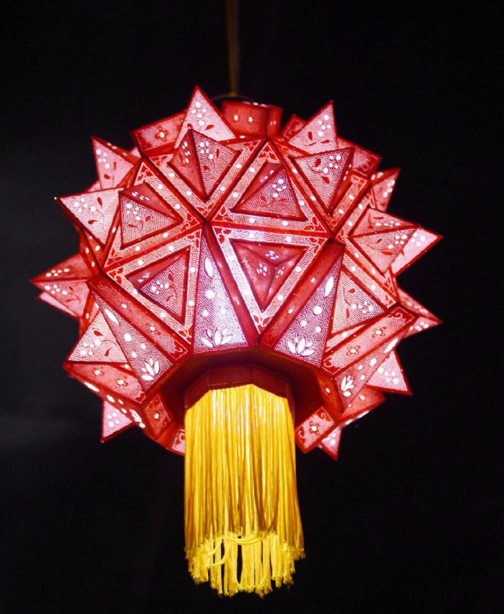
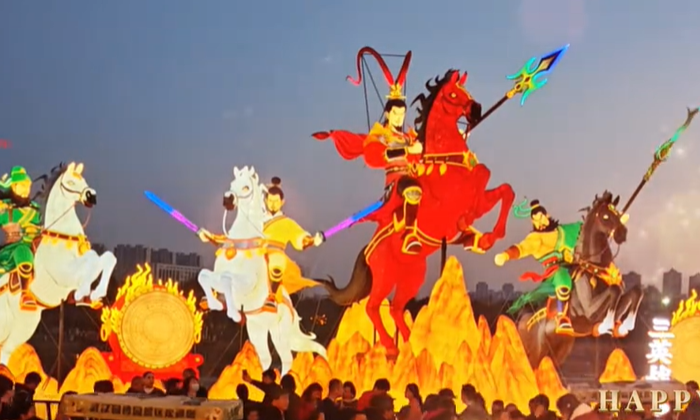
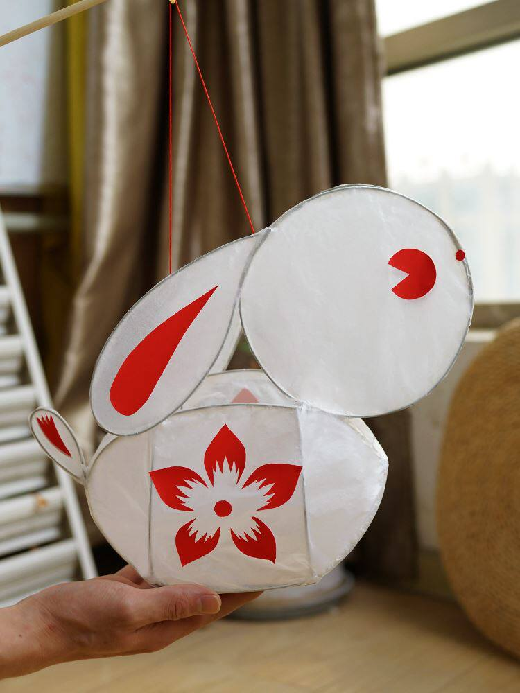
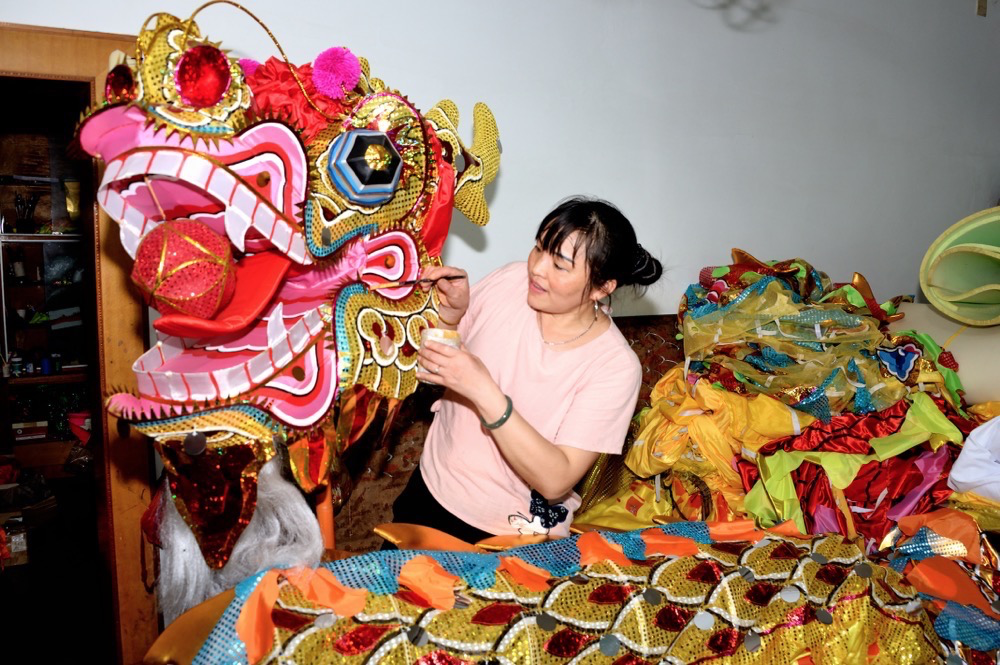
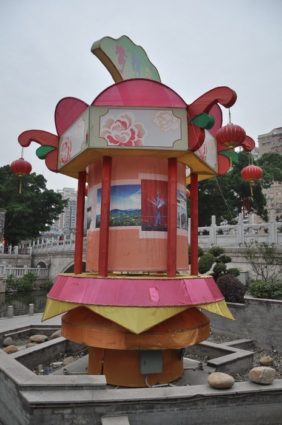
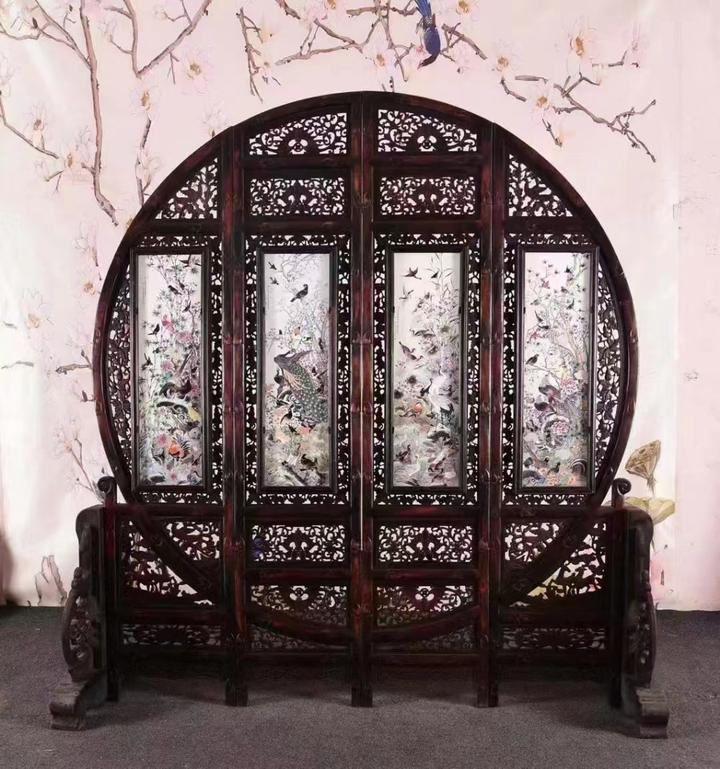
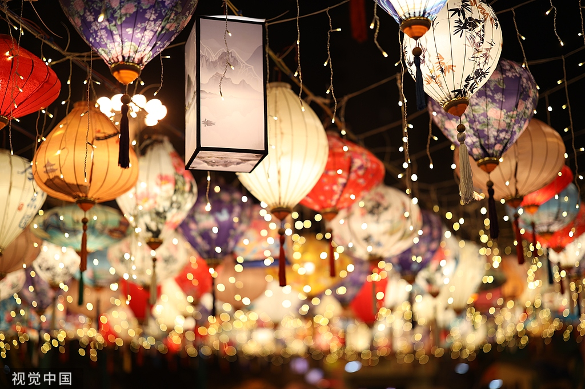
灯彩，是中国传统民间工艺的重要组成部分，每逢元宵佳节，大江南北张灯结彩，寄托着人们对国泰民安、风调雨顺的美好祈愿。
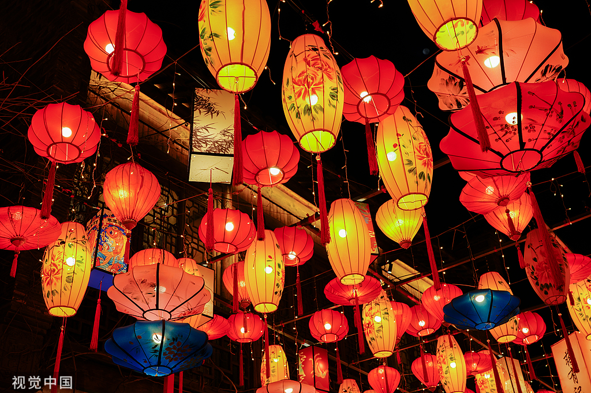
南方花灯以泉州、仙居、潮州等地为代表，以其精美的刻纸工艺、独特的无骨结构和丰富的彩绘技法，展现出非凡的艺术魅力与匠心传承。
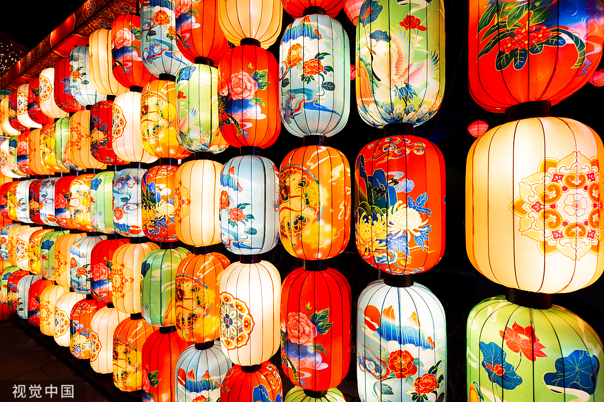
在历史的长河中，无数手工艺人凭借一把刻刀、几根竹篾，将中华文化的精神内核融入一盏盏璀璨的花灯之中，代代相传，生生不息。







